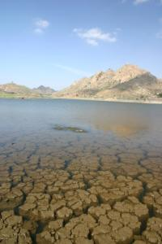
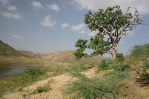

Le 20 décembre 2004,
 Nous commencons a nous remettre completement de nos petits problemes de sante. Nous decidons donc de faire une petite escapade vers le lac du Tigre, repute pour ses crocodiles. Badi ka Talab est un lac artificiel niche au creux de collines rocailleuses et dont le fond est argileux. Une partie du lac est asseche et la population locale en profite pour cultiver sur ces terres fertiles.
Nous observons des femmes, pieds nus, en train de concasser l’argile asseche et crevasse avec des pioches. D’autres femmes font la lessive a meme le lac depuis un rocher. Comme d’habitude, depuis le debut de notre sejour en Inde, il semble que ce soit les femmes qui s’acquittent des travaux les plus penibles (on en voit aussi sur les chantiers ou dans les travaux publics). En tout cas, elles semblent intriguees par notre presence et nous font des grands signes en rigolant.
 Les familles semblent installees autour du lac dans des tentes sommaires. Des enfants courent vers nous et nous demandent des roupies. Cette attitude, fort courante, n’est malheureusement pas decouragee par les parents. Eve-Laure et moi avons decide de ne jamais donner aux enfants car nous pensons que cela peut, des le plus jeune age, les rendre dependants et les inciter a ne pas etudier a l’ecole (obligatoire jusqu’a 14 ans) pour s’en sortir.
Nous bouclons le tour du lac en trois heures et sommes enchantes par le paysage. Nous retrouvons notre chauffeur aux yeux verts, qui a pique un roupillon en nous attendant. Nous repartons en musique avec de la pop hindi a fond. Il faut dire que pour l’instant, c’est le seul rickshaw muni d’un auto-radio, que nous avons pris.
Arrives en ville, nous decidons de faire une ballade a pied. Eve-Laure fatigue vite et m’avoue qu’elle est en manque de proteines animales dans ce pays ou la majorite des gens et donc des restaurants sont vegetariens. Je revets ma tenue de secouriste et mene "Carnivovore" a un restaurant de vente a emporter, specialise dans le poulet. Nous prenons donc un poulet tandoori chacun (au sens propre du terme : une bete entiere chacun) En quelques minutes, notre carnaciere retrouve ses bonnes joues de normande.
Il est temps de retrouver notre hotel car Risvan, notre gerant, nous attend pour nous amener a l’aeroport. En effet, a peine convalescents, nous n’avions pas envie de faire le trajet Udaipur - Bombay en vingt heures de bus et avons donc decide de prendre l’avion.
Le transfert de l’hotel a l’aeroport prend plus d’une heure en raison d’embouteillages causes par la construction d’une route. J’en profite pour entamer la conversation avec Risvan. Comme il est tres reserve, il laisse beaucoup de blancs dans le dialogue, puis on ne peut plus l’arreter.
C’est un garcon de 24 ans qui presente bien, toujours habille elegamment. On peut le souligner car, contrairement aux femmes qui sont tres coquettes, les hommes ne font pas beaucoup d’effort sur leur coiffure ou leur tenue vestimentaire. Notre chauffeur nous explique qu’il vient d’une famille musulmane moderne et aisee. Son pere, maintenant retraite, a ete directeur d’une usine de zinc. Ses parents, fait rare pour des musulmans en Inde, n’ont eu que deux enfants, lui et sa soeur qui sont tous les deux diplomes de l’universite. Risvan a etudie la gestion de l’administration. Il compte bientot tenir directement un hotel et un jour en achete un. Il est tres ambitieux et sait ce qu’il veut. Il desire aussi choisir sa future epouse lui-meme et lui demande d’avoir, surtout, un bon sens de l’humour. D’apres les quelques discussions que j’ai eues, les jeunes semblent vouloir faire bouger les choses dans le Rajasthan, un des etats les plus retrogrades de l’Inde.
Nous arrivons a l’aeroport. Il ne dessert que des lignes interieures, mais n’est pas pire que Roissy. Ce qui nous surprend le plus, c’est qu’on nous fouille ainsi que nos sacs de cabines trois fois et la derniere sur la piste, juste avant de monter dans l’avion.
En route pour Bombay !
Michaël
{kind=link}
{kind=link}